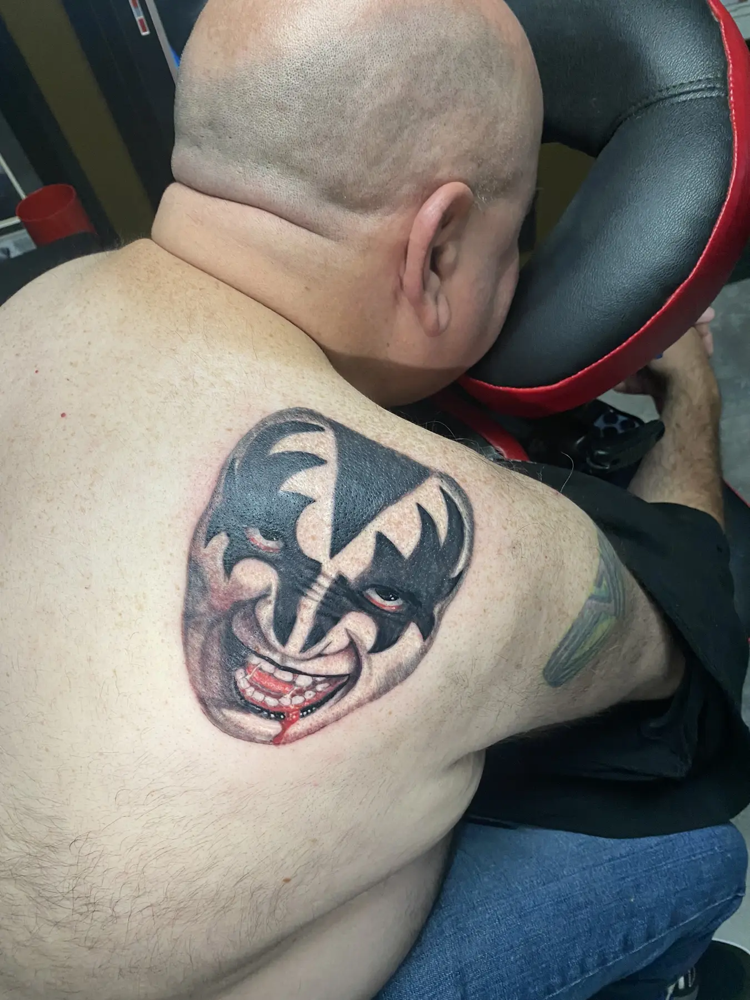

Subject
Choose a character, creature, scene, object, or original concept that gives the tattoo a clear center.
Horror & Dark-Art Tattoos • Oklahoma City
Josh Poindexter creates horror and dark-art tattoos ranging from recognizable character portraits to original creatures, skulls, animals, and atmospheric compositions in color or black-and-gray.

Mood through design
Horror tattoos need visual hierarchy. The face, creature, weapon, or symbolic element should establish the focal point, while texture, shadow, background, and color support the mood without burying the subject.
Josh uses contrast to separate forms and direct attention. Deep blacks can anchor the design, but readable midtones, highlights, open skin, and controlled color are what keep the image from collapsing into one dark mass.
Building the image
A good consultation defines the subject, emotional tone, visual treatment, and how much space the design needs.
Choose a character, creature, scene, object, or original concept that gives the tattoo a clear center.
Cinematic, grotesque, supernatural, realistic, campy, or graphic approaches create very different results.
Highlights, black anchors, open skin, and controlled edges separate the focal point from the atmosphere.
Portraits and detailed scenes need enough physical space to preserve facial features, texture, and readability.
Original or recognizable
For a recognizable character, bring several clear references showing the features, costume, expression, or era that matters to you. For an original concept, collect images that describe anatomy, texture, lighting, environment, and mood.

Horror tattoo FAQ
Bring clear references and identify the exact version, costume, expression, or scene you prefer. The design still needs to be adapted to the placement and tattoo format.
Either can work. Black-and-gray can emphasize lighting, texture, and atmosphere, while color can support recognizable characters, practical-effects tones, or dramatic accents.
The practical minimum depends on the face, number of details, placement, and desired longevity. Josh may recommend a larger size or simplified composition if the requested footprint is too small.
Yes, but the complete area should be planned so focal points, scale, background, and transitions feel intentional rather than assembled one empty gap at a time.
Give the darkness a focal point
Josh will help turn the reference material into a tattoo that reads clearly and carries the right atmosphere.